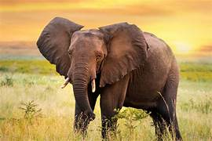

elefante africano (Loxodonta africana)

El elefante africano vive en diferentes regiones del continente africano. De las dos especies de elefante africano que existen, el elefante africano de sabana habita en las llanuras abiertas del África subsahariana, donde se alimenta de raíces, hierba, fruta y corteza; mientras que el elefante africano de bosque vive en los bosques húmedos de África Central y Occidental, donde se alimenta de hojas, frutos y semillas.
Los elefantes africanos son herbívoros, por lo que se alimentan principalmente de hojas, ramas, frutos, cortezas y raíces. Consumen entre 100 y 300 kilos de vegetación al día, lo que les obliga a pasar unas 16 horas diarias buscando comida. También beben entre 100 y 200 litros de agua al día, y pueden recorrer grandes distancias para encontrar fuentes de agua durante las épocas de sequía.